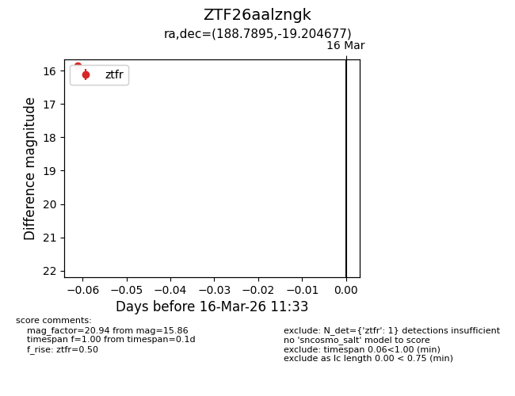
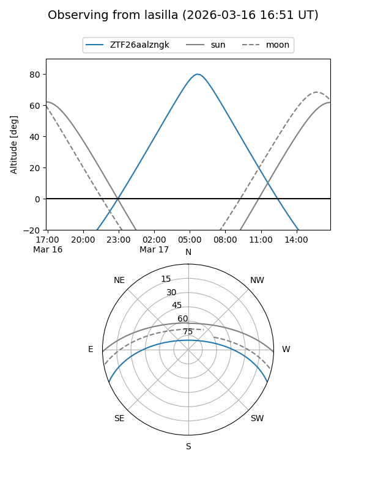
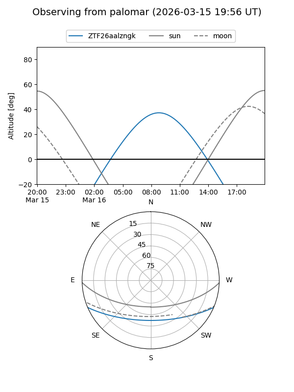

ZTF26aalzngk
Target ZTF26aalzngk at 2026-03-16 11:35
Aliases and brokers:
FINK: link
Lasair: link
ALeRCE: link
alt names
ZTF26aalzngk (ztf,fink_ztf)
Coordinates:
equatorial (ra, dec) = 188.7895,-19.20468
equatorial (HMS+DMS) = 12:35:09.48,-19:12:16.84
galactic (l, b) = (297.6303,+43.49942)
Flags:
Photometry:
last ztfr=15.86
1 ztfr detections
Lightcurve

Visibility


Additional plots